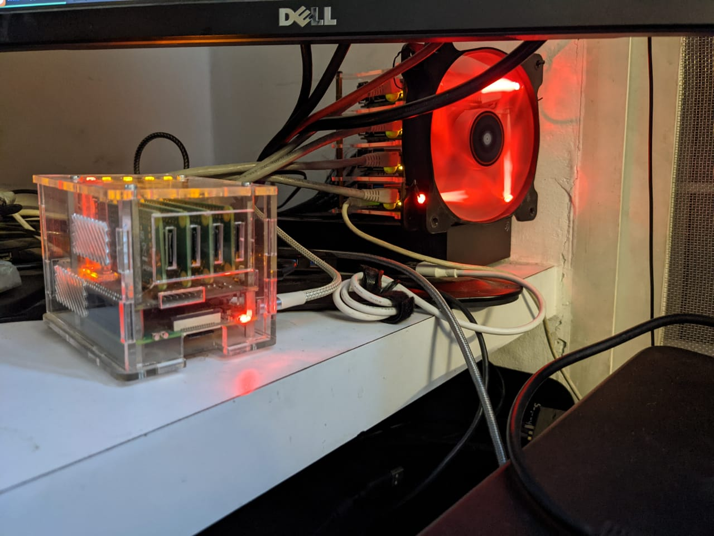

Posted in 2021
Learning Golang
- Dec 28, 2021
- Learning
Despite my numerous failed attempts at learning golang, I’ve decided to bite the bullet and try yet again. This time, Learn Go With Tests is my favorite resource.
Memories of a Circulating Library
- Dec 27, 2021
When I was 9, my mother enrolled me into a circulating library in Jayanagar 4th Block. It was named Serene, and it was operating out of what was a smallish garage. The librarian, whose name I cannot really recall (I think it was Kumar or some other common Kannadiga name), was thin, silent and didn’t strike me as someone who read himself. It was a living for him.
Reflections on Doing More
- Dec 21, 2021
- Life
This post originally started off as something on how I’m trying to learn more. It meandered into Dear Diary territory, but there’s a certain flow to it, in my opinion. I’m keeping it as it is, and releasing it without edits.
Advent of Code 2021
- Dec 07, 2021
- Tech
I’m working on this year’s Advent of Code problems. I have wanted to work on this live for several years now, and this year, I’ve started allocating some time to this every day.
Updates
- Dec 06, 2021
- Updates
I’ve been silent for a while, not because I haven’t been writing, but because I’ve been writing. I’ve been working on a few blog articles, primary of which is a rather long article on Oso and how you can use it for authorization. This is an article I’ve been working on for a few months, and it is rather long. I want to get it out there this month, since I’d originally promised the article to the folks at Oso in Jan 2021.
I joined Merkle Science as an Architect
- Aug 24, 2021
- Updates
I left Visa on July 21, and joined Merkle Science as an Architect and Lead Software Engineer. I’m working with the Data Engineering team, and have some cross-over work with the Product team as well. I am excited for this shift since this is the first startup I’m working at as a developer, and this comes after 2 years at a large corporation. I’m also excited since I knew nothing about Cryptocurrencies and Decentralized Finance, and today I can say I understand at least a little.
Empathy in Tech
- Jul 25, 2021
- Thoughts
I’ve been meaning to write about empathy in tech for a long time. Oddly, this is a topic that I’m the most hesitant to write about, for personal reasons. I’m not the most empathetic person, and I have trouble understanding how to improve the things I say to my friends. However, the topic I’m talking about has more to do with teaching than it does with personal relationships outside of tech.
For Those Who Came in Late
- Jul 20, 2021
- Programming
This is a very personal post. It’s about my journey so far. A few of you might know this already, but I thought this is a good time to document this journey.
Setting up Neovim with Vim Plug and YouCompleteMe
- Jul 01, 2021
I’m moving to neovim for my primary editing purposes. VSCode has served me well, but I’m growing wearing of its growing pains. Some extensions don’t work well, and many things seem broken of late. Besides, I don’t really use the IDE features all that much.
A Weekend With Postgresql
- Jun 28, 2021
- Talks
I’ve wanted to read the postgresql documentation live, on video, for over a year now. This is the best time to do it.
Returning to the Craft of Programming
- Jun 03, 2021
- Update
I have not been working on side projects in a few months. I’ve been busy with life, family, and health. However, I finally feel ready to return to it.
A Personal Code
- May 01, 2021
- Personal
Explicit markup ends without a blank line; unexpected unindent.
My Notes
- Mar 26, 2021
- Learning
I needed a place to collect my thoughts on various topics related to technology, in a slightly less-public manner. That’s where my new notes website comes in.
Migrating the Mahabharata Posts
In 2016, I spent a month in Hampi to read Bibek Debroy’s 10-volume translation of the Mahabharata. It was a life-changing experience, and I formed a bond with the author through correspondence ever since. I’d posted about my experience on Instagram, but I’d like to move all the posts here, for easy retrieval.